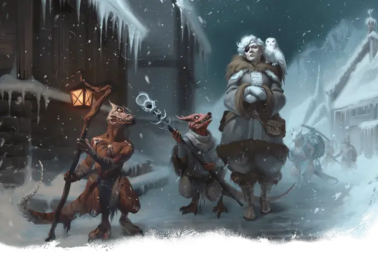

Валин Харпел
Vellynne Harpell
Средний Гуманоид (Человек), нейтральный, именной НИП

Класс Доспеха 13 (наручи защиты)
Хиты 67 (9к8 + 27)
Скорость 20 футов
| мод | спас | ||
|---|---|---|---|
| СИЛ | 10 | +0 | +0 |
| ЛОВ | 12 | +1 | +1 |
| ТЕЛ | 17 | +3 | +3 |
| мод | спас | ||
|---|---|---|---|
| ИНТ | 18 | +4 | +6 |
| МДР | 15 | +2 | +4 |
| ХАР | 13 | +1 | +1 |
Навыки История +6, Магия +6
Чувства пассивное Восприятие 12
Языки Общий, Дварфийский, Драконий, Орочий, Эльфийский
Опасность 4 (1100 опыта)
Бонус мастерства +2
Особенности
Специальное снаряжение. Валин носит наручи защиты [bracers of defense] и волшебная палочка снарядов [wand of magic missles] (см. раздел «Действия», ниже).
Использование заклинаний. Валин является заклинателем 8-го уровня. Её базовой характеристикой является Интеллект. (Сл спасброска от заклинаний 14, +6 к попаданию атаками заклинаниями). У неё подготовлены следующие заклинания волшебника:
• Заговоры (неограниченно): волшебная рука [mage hand], леденящее прикосновение [chill touch] (см. раздел «Действия» ниже), свет [light], сообщение [message], фокусы [prestidigitation];
• 1-й уровень (4 ячейки): жуткий смех Таши [tasha’s hideous laughter], луч болезни [ray of sickness], обнаружение магии [detect magic], понимание языков [comprehend languages];
• 2-й уровень (3 ячейки): луч слабости [ray of enfeeblement], тёмное зрение [darkvision], удержание личности [hold person];
• 3-й уровень (3 ячейки): восставший труп [animate dead], Леомундова хижина [Leomund’s tiny hut], прикосновение вампира [vampiric touch] (см. раздел «Действия» ниже);
• 4-й уровень (2 ячейки): магический глаз [arcane eye], усыхание [blight].
Действия
Прикосновение вампира (заклинание 3-го уровня, требуется ячейка заклинания). Рукопашная атака заклинанием: +6 к попаданию, досягаемость 5 фт., одно существо. Попадание: 10 (3к6) урона некротической энергией и Валин восстанавливает хиты количеством равным половине нанесенного урона некротической энергией. Если Валин использует для заклинания ячейку 4-го уровня и выше, урон некротической энергией увеличивается на 1к6 за каждый уровень ячейки выше 3-го.
Леденящее прикосновение (заговор). Дальнобойная атака заклинанием: +6 к попаданию, дистанция 120 фт., одно существо. Попадание: 9 (2к8) урона некротической энергией и цель не может восстанавливать свои хиты до начала следующего хода Валин.
Волшебная палочка снарядов. Держа эту палочку Валин может потратить 1 или несколько зарядов палочки, чтобы наложить ей заклинание волшебная стрела [magic missile]. За 1 заряд Валин накладывает это заклинание 1-го уровня. Она может увеличить уровень заклинания на 1 за каждый дополнительный используемый заряд.
Палочка ежедневно восстанавливает 1к6 + 1 заряд на рассвете. Если Валин истратила последний заряд в палочке, бросьте к20. Если выпадет «1», палочка рассыплется в пыль и уничтожиться.
Описание
Валин Харпел родом из авторитетной семьи Харпел из городка Лонгсэдл. Холодная и бесстрастная, она занялась магией всего десять лет назад, когда ей было уже под сорок, и хорошо овладела магией школы Некромантии. Валин всю жизнь борется с нервным расстройством, которое проявляется в дрожании рук. Оно может повлиять на её равновесие и походку, но она научилась накладывать свои заклинания невзирая на эту досадную помеху.
Несмотря на уверенное владение темным искусством, она не была бы принята в Волшебное Братство, если бы не ее семейные связи — факт, о котором она не желает вспоминать.
Валин привезла с собой в долину Ледяного Ветра семейную реликвию: сферу-профессора, (см. приложение D) которую она зовёт профессор Скант [professor Skant]. Сфера обладает знаниями о Нетериле, которые могут стать важны, если Валин обнаружит похороненный под ледником Регхед город нетерильцев. К сожалению, сфера недавно была украдена Нэсс Лантомир, одной из соперниц Валин в Волшебном Братстве. Валин намеревается вернуть сферу обратно, прежде чем возобновить свои поиски города Итрин.
Напарники. С момента прибытия в долину Ледяного Ветра Валин заручилась услугами шести кобольдов долины Ледяного Ветра [icewind Kobold], которые действуют как её слуги и проводники. Двое из них были убиты наложенным соперницей Валин, Насс Лантомир заклинанием Мельфова кислотная стрела [Melf’s acid arrow], но Валин оживила трупы, превратив их в зомби.
Если Валин ранена, то может наложить заклинание прикосновение вампира [vampiric touch] и использовать это заклинание для восстановления своего здоровья за счет кобольдов.
Фамильяр. Фамильяр Валин — снежная сова [owl], которую волшебница использует в качестве разведчика. Он использует блок статистики совы [owl], но является небожителем, а не зверем.
Книга заклинаний. Книга заклинаний Валин представляет собой потрепанный пергамент в чёрной кожаной обложке, обвязанный малинового цвета лентой. Личная печать некроманта вписана козьей кровью на титульном листе книги. Фолиант содержит все подготовленные Валин заклинания, плюс дополнительно следующие: глухота/слепота [blindness/deafness], защита от зла и добра [protection from evil and good], магическое оружие [magic weapon], Тензеров парящий диск [Tenser’s floating disk], поиск фамильяра [find familiar], превращение [polymorph], проклятие [bestow curse], псевдожизнь [false life], снятие проклятья [remove curse] и щит [shield].